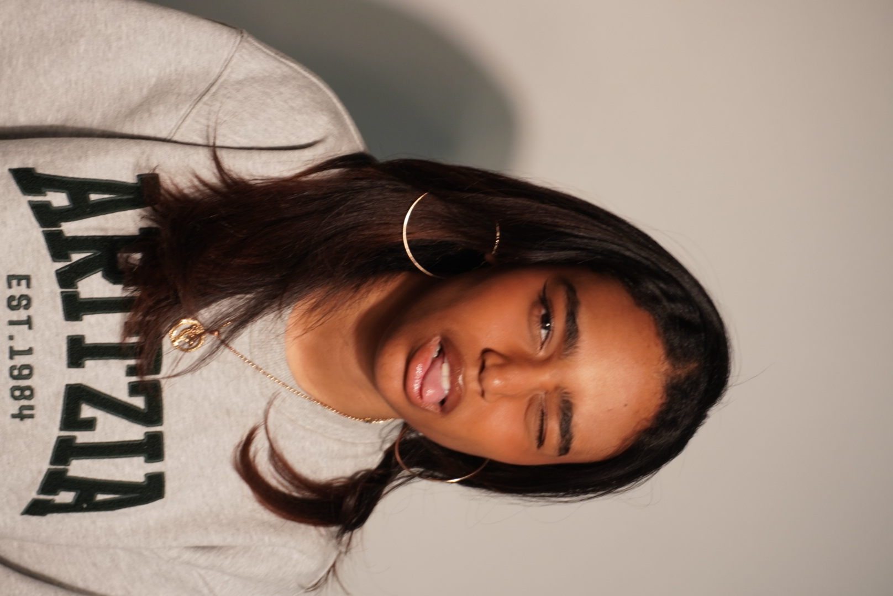

Name: Selaire Tavarez
Birthday: October 23rd 2008
Ethnicity: Trinidadian & Dominican
Fun Facts:
⁀➴ Has lepidopterophobia (fear of butterflies)
⁀➴ Only applied to one college
⁀➴Has seen Jungkok + BTS perform 4 times for free
⁀➴ Listens to 400+ genres